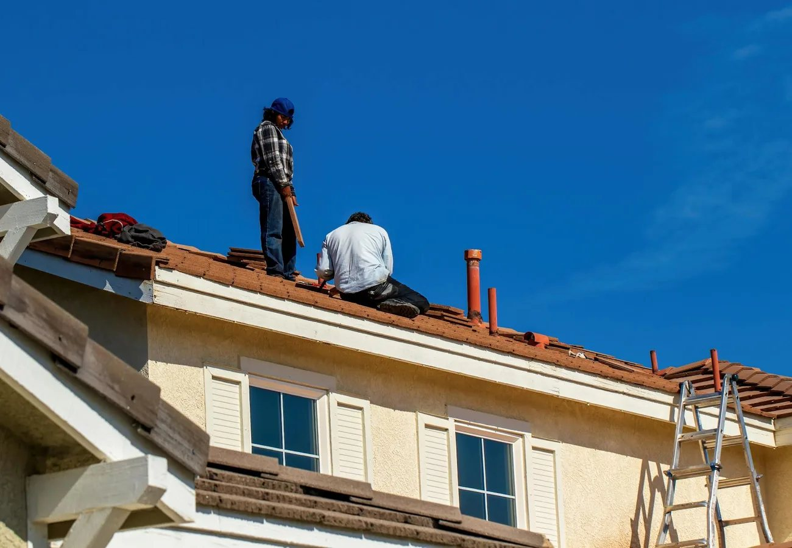

01
Peoria
Her home base: spring training, the P83 district and Lake Pleasant to the north.
Homes in Peoria

Buyer's Guide
The eight steps from your first conversation with Rebecca to the keys, and what the Arizona contract asks of you along the way.
How it works
Buying a house in Arizona runs in the same order every time: an agent, a pre-approval, the search, an offer, then escrow, inspections, the appraisal and closing. Each step has its Arizona details, and they are all below.
Rebecca Durfey has been licensed in Arizona since 2002 and works with buyers across Peoria and the West Valley. You have personal and direct communication with her, and her licensed assistant, Sherri Dastrup, works alongside her.
Moving here from another state? Read Moving to the Phoenix Area first for the climate, taxes and getting set up, then come back to the steps.
Step 1 of 8
Before you tour homes together, you and Rebecca sign a written buyer agreement. It sets out what she does for you and how she is paid. Buyer's agent compensation is negotiable and set in your written buyer agreement. Sometimes the seller agrees to pay part or all of it.
Rebecca reads the agreement through with you before you sign anything.
Step 2 of 8
A lender reviews your income, debts, savings and credit, then tells you in writing how much it is prepared to lend. Sellers expect a pre-approval letter with an offer, and it keeps your search inside a price you are comfortable paying.
Talk to more than one lender. Each one gives you a Loan Estimate on the same federal form, so rates and fees compare line by line.
Step 3 of 8
Write down what the home must have, then what you would like it to have. Bedrooms, a garage, a pool or room for one, an HOA or none, the drive to work: the list keeps tours focused and settles the close calls between two good homes.
Your list becomes a saved search on Home Search, so new listings that match it come to your inbox.

Step 4 of 8
Rebecca lines up the homes that fit your list and tours them with you. Between visits, drive the street at different times of day, time the commute and read the HOA rules for any home you are serious about.
Considering a new build too? Tell Rebecca before you visit a builder's model home. Builders have their own sales teams and contracts, and she can represent you from that first visit.
As first-time homebuyers, we had a lot of questions throughout the process, and she was always patient, knowledgeable, and quick to respond.
Allison M., bought in Litchfield Park · Zillow, July 2026
Step 5 of 8
Rebecca helps you settle on a price and terms, then writes and presents the offer. Price is one part. The earnest money, your loan type, the closing date and what stays with the house all count, and a clean offer can beat a higher one.
The seller can accept, counter or decline. Once both of you sign, you are under contract and its dates start to run.
Step 6 of 8
Your earnest money goes to the escrow company named in the contract, which holds it until closing. In Arizona that is a title and escrow company: it prepares the title commitment, gathers the documents and handles the money at closing.
Read the title commitment when it arrives. It lists what is recorded against the property, and your contract gives you a set time to raise anything you object to.

Step 7 of 8
During the inspection period you hire your own inspectors for the home, the roof, the pool and termites. Most sellers also give you a Seller's Property Disclosure Statement (SPDS), their own account of the home. Brokers do not verify it, so read it beside the inspection reports.
If something needs attention, the Buyer's Inspection Notice and Seller's Response is how you ask for repairs or a credit. Your lender orders the appraisal and finishes underwriting. Your contract sets every deadline in this step; the Arizona Buyer Advisory explains what to check, and Rebecca tracks each date with you.
Step 8 of 8
Shortly before closing you walk through the home one last time to check its condition and any agreed repairs. You sign the closing documents with the escrow officer and send your funds. Once the deed is recorded with the county, the house is yours and the keys come to you.
Wire fraud targets this step. Before you send money, call your escrow officer at a number you found yourself, never one from an email.
Where to buy
Her three busiest towns, each with its own page of homes for sale, schools, parks and getting around.
First-time buyers
Down payment assistance is available to buyers in Peoria and across Maricopa County.
HOME+PLUS, from the Arizona Industrial Development Authority, is available statewide, and Home in Five Advantage, from the Maricopa County and Phoenix Industrial Development Authorities, covers homes in Maricopa County. You apply for either through an approved lender. Each sets its own income and price limits, and they change, so read the current terms on the program's own page.
Service members and veterans should also look at VA home loans, which can need no down payment. Run your numbers in the calculator below before you call a lender.
Run the numbers
Try a price, a down payment, a rate and a term to see a monthly payment. Property taxes, insurance and HOA dues change the total, so treat the result as a starting point and use your lender's Loan Estimate for the real figures.
<!-- IDX_ZONE: mortgage_calculator -->
The AgenticPress mortgage calculator plugin, in her red. The builder places the [mortgage_calculator] shortcode here.

Arizona specifics
No transfer tax. The Arizona Constitution bars new taxes on the sale or transfer of real property, so no transfer tax appears on your closing statement. A flat $2 fee set by state law is part of the county's recording charges.
An Affidavit of Property Value. State law requires one with every deed for a sale. It reports the price and the kind of property to the county, and it is filed when the deed is recorded.
How you take title. Arizona is a community property state, and the way you hold title, such as community property with a right of survivorship, joint tenancy or tenancy in common, has legal and tax effects. Ask an Arizona attorney or tax adviser which fits you before you sign.
Wire fraud. Criminals send fake wiring instructions made to look like the title company's. Confirm by phone before you wire anything, and report a suspected scam to the FBI's Internet Crime Complaint Center.
Questions
Buyer's agent compensation is negotiable and set in your written buyer agreement. Sometimes the seller agrees to pay part or all of it. Rebecca explains the agreement before you sign it.
It depends on the loan. Some loans need very little down, and VA loans for eligible service members and veterans can need none. Your lender tells you what your loan requires, and Arizona's assistance programs can help with the rest.
There is no single number. Lenders weigh your monthly debts against your income, along with your credit and savings. Try a price in the calculator above, then ask a lender for a pre-approval.
It is the window in your contract for inspections, for reading the seller's disclosure and for asking for repairs. Your contract sets the number of days, and the Arizona Buyer Advisory lists what to check before it ends.
A title and escrow company handles the closing. For legal or tax questions, such as how to take title, ask an Arizona attorney or tax adviser.
From an accepted offer, closing happens on the date you and the seller agree in the contract. Loan approval, the appraisal and the inspection period set the pace, and a cash purchase can close sooner.
Resources

Selling too?
If you own a home now, the timing of its sale shapes your purchase.
The Seller's Guide covers pricing, getting the house and yard ready, and what happens after an offer. For a quick number first, get an instant estimate of your home's value.
Contact
Call Rebecca at 623-297-4536 or send a note through the contact page. You will have personal and direct communication with her from the first call.